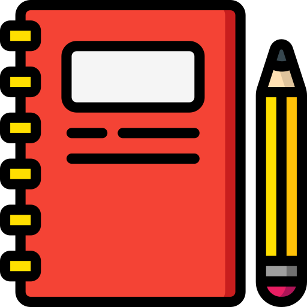

Trabalho Prático HTML + CSS + JS dos Estudantes Lucas Araújo e Jônatas Pereira
-

Salas de Aula projetadas para garantir o conforto e otimizar o aprendizado por parte dos alunos -

Laboratórios para que nossos alunos possam experimentar, analisar e concluir. -

Equipe de profissionais seletos e qualificados
Conheça a Vereda

Nosso Trabalho
A escola hoje é um espaço onde as crianças aprendem a distinção não natural entre trabalho e brincar.
Saiba Mais
Estrutura
É impossível pensar na existência de uma escola pública sem imaginar a presença do educador em sala de aula com parte fundamental de sua estrutura.
Saiba Mais